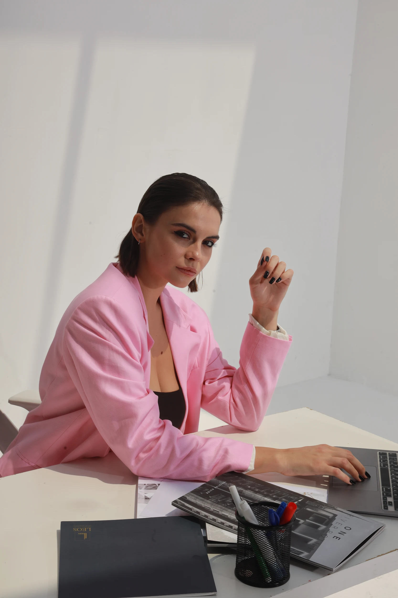

Где тебе будет легче расти
Страны, среда, ритм жизни, доступ к рынку и чувство принадлежности.
Бесплатный тест про международный путь
Для тех, кто готов расширить свою жизнь: переезд, новая среда, доход, карьера, свобода или просто более ясный следующий шаг.

о Маше
Новая Глава
Твой результат даёт направление. Сессия 1:1 превращает его в персональный план: какие страны сравнить, какие возможности искать, каких рисков избежать и какие первые шаги реалистичны именно для твоей ситуации.
Ты выберешь удобное время в Calendly. Оплату можно подключить следующим шагом.
что станет яснее
Страны, среда, ритм жизни, доступ к рынку и чувство принадлежности.
Доход, карьера, клиенты, проекты и международный масштаб.
От внутреннего шума к реалистичному первому плану.
Гибкость, удалённая работа, новая структура жизни и больше выбора.
вопросы
Нет. Это стратегическая сессия и диагностика личного направления. Она не заменяет юриста, налогового консультанта, иммиграционного специалиста или финансового эксперта. Где релевантно, Маша может помочь подобрать проверенных специалистов и контакты для этих вопросов.
Нет. Часто сессия полезна именно потому, что нужно понять, что важнее всего: страна, рынок, доход, среда, свобода, отношения, карьера или новая структура жизни.
Да, на стратегическом уровне: какие рынки, форматы работы, навыки, связи и первые шаги могут подойти твоей ситуации.
На русском и английском.
«Новая Глава» — это стратегическая сессия, основанная на личном международном опыте, практическом исследовании и коучинговом подходе. Это не юридическая, налоговая, иммиграционная или финансовая консультация, и она не гарантирует визы, работу, доход, резидентство или конкретные знакомства.